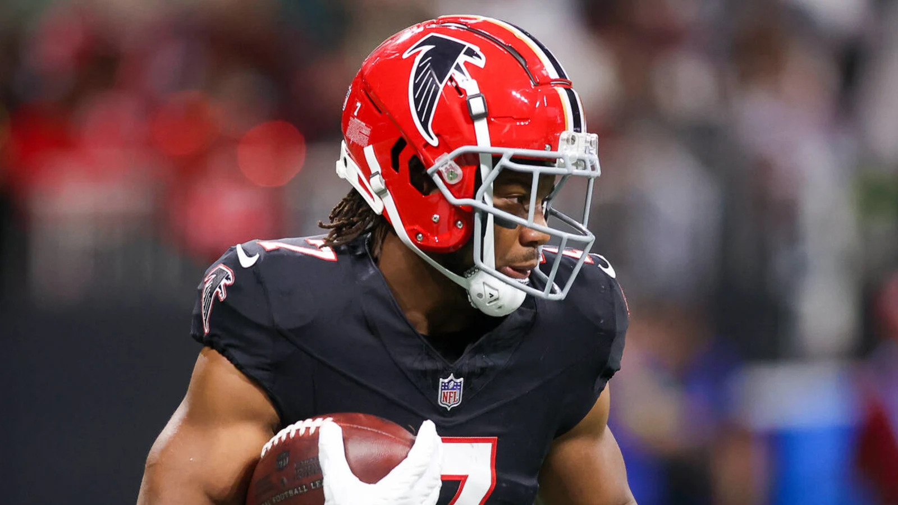

Last regular season week of the year! We got five guys left in the mix, let’s take a look at what they have in front of them this week! Next week we’ll have a closer look at the playoff matchups, regular season awards, and look ahead at the new Slutler pool!
Power Rankings
👑 CJ (8-4, 1616.78 PF, W1)
The Vegas odds, by Jake Bowen, have Chris as the favorite going into the last week of the season. While it’s possible that #4 or #5 could match his wins total, they are 200 points behind him. Chris is in… but has an interesting matchup still.
2. Tony (8-4, 1607.16, W6)
Tony locks up the longest winning streak of the season… what a fucking way to end the season, and put last year’s misery in the rear view mirror. He’s in for the same reason as CJ, but again… some spice ahead.
3. Tua Williams One Kupp (7-5, 1526.64, 1W)
Though he’s behind PJ in points, he’s got a nice lead on Pangy and PJ. If he wins, he’s in. A loss and a Pangy win means YP is in.
4. PJ (8-4, PF 1434.12, L1 )
It’s hard to imagine PJ missing the playoffs after being atop the standings for so much of the season, but there’s a real ass possibility of that. He holds an 18-point lead over Pangy, who if he makes up the difference in wins, has a good opportunity to knock PJ out.
5. Sweet Brotha Numpsay (6-5, 1252.86, W3)
This guy stinks, we all know it… no way he could knock out one of these guys, right? Well, I got this feeling he’s the lucky horse to bet on. He’s 100 points back from Seif, so likely needs a PJ loss to have a chance.
Matchups of the Week
#1 Not Diggin that Mustard (8-5) vs. #4 Tua Infinity and Bijan (7-4) * Sleeper Projection: Seif wins 53% * The playoff implications are straightforward, but I love that we get to see Henry vs. Bijan, after they were traded for one another, in this crucial matchup! * What to watch for: * Henry vs. Bijan * Diggs and JT are out for CJ, while Seif looks for better weeks out of Chase and Kupp, who have been not so great the last couple of weeks. * TNF - Dak. He’s been real good.
#2 Ja Montg (8-4) vs. Sweet Brotha Numpsay (7-5) * Sleeper Projection: Pangy wins 54% * Pangy needs to win to stay in the mix. Tony has his sights on the #1 spot. * What to watch for: * It’s all about the Niners for Pangy, but that might work out with the plus matchup against PHI - though that might be tough for their D * Niners? Well, Tony’s got their Ace… so who’s it gonna be?
#3 8========D (8-4) vs. Love Heem (4-8) * Sleeper Projection: PJ wins 70% * Will Kris play the joker? Projections say no, but Kris has had some big weeks. Ya never know! * What to watch for: * A historic collapse in the making. PJ’s only projected slightly above 100, but currently holds a strong projection against Kris who has two guys on bye in his lineup. We won’t forget a loss to Kris here, if it costs him his spot. * For Kris, the Earth revolves around Mostert. Achane’s health could play a role if he’s back, with Mostert banged up too. But we know he can surely boom.
Stupid Sexy Slutlers
(more coming on these fucking losers next week) 6. Andy 7. Joel 8. Me 9. Kris 10. Neil